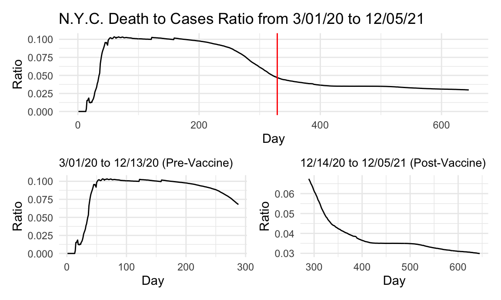
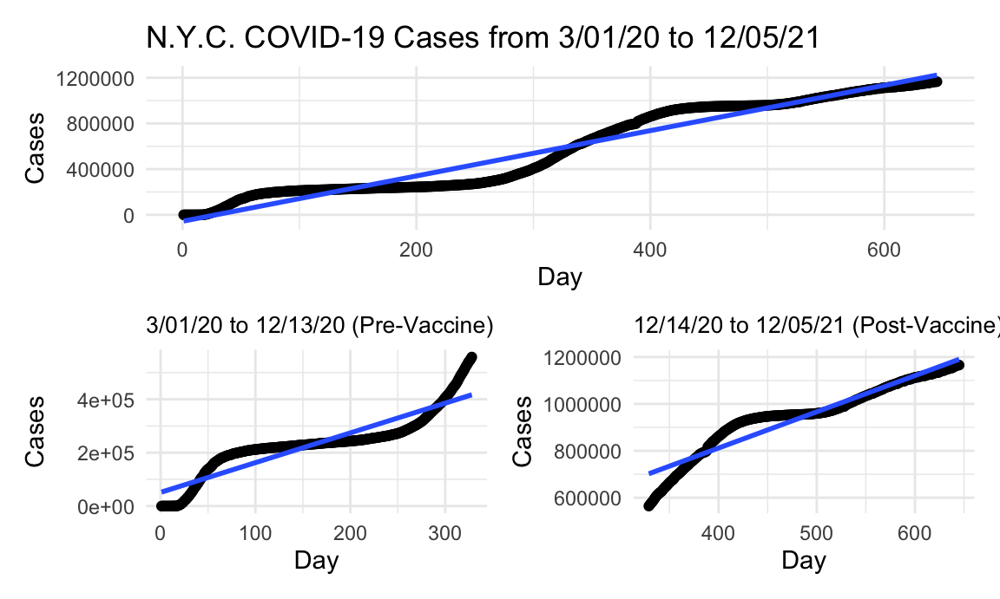
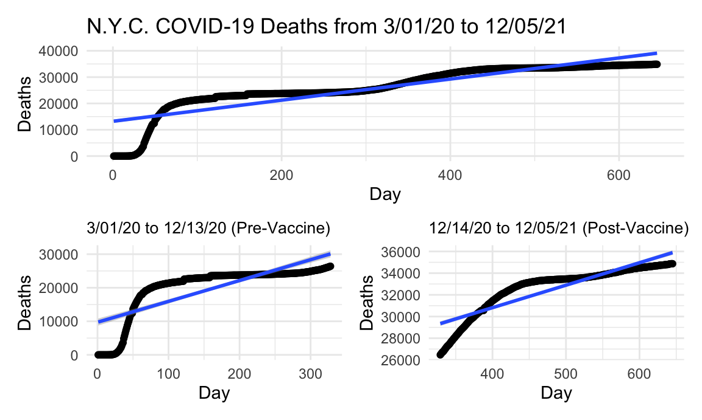

library(tidyverse)
library(patchwork)
library(plotly)
knitr::opts_chunk$set(
fig.width = 6,
fig.asp = .6,
out.width = "90%"
)
theme_set(theme_minimal() + theme(legend.position = "bottom"))
options(
ggplot2.continuous.colour = "viridis",
ggplot2.continuous.fill = "viridis"
)
scale_colour_discrete = scale_colour_viridis_d
scale_fill_discrete = scale_fill_viridis_d#nyc_covid =
# read_csv("./us-counties.csv") %>%
# filter(county == "New York City") %>%
# mutate(day = 1:645,
# dc_ratio = deaths/cases) %>%
# select(-fips) %>%
# write_csv("./nyc_covid.csv") Original data set was almost 80 MB in size
nyc_covid = read_csv("./data/nyc_covid.csv") %>%
mutate(new_cases = cases - lag(cases, default = first(cases)),
new_deaths = deaths - lag(deaths, default = first(deaths)))In order to investigate the effect that vaccine release had on the trajectory of the pandemic, we first had to separate our data into pre-vaccine and post-vaccine dates. The date 12/14/20 was used as the date when vaccines became available in the U.S. Date was converted to “day of pandemic” in order to fit a line of best fit on a numeric variable instead of YYYY-MM-DD date format. The data from NY Times consisted of cumulative case and death counts, and from this we first looked at the death to case ratio curve overall, then separated into pre- and post-vaccine availability to see whether the presence of a vaccine changed the death/case ratio. Below is a look at that data for the the state of New York specifically.
total_ratio_p =
nyc_covid %>%
ggplot(aes(x = day, y = dc_ratio)) +
geom_line() +
labs(title = "N.Y.C. Death to Cases Ratio from 3/01/20 to 12/05/21",
x = "Day", y = "Ratio") +
geom_vline(xintercept = 329, linetype="solid",
color = "red", size=0.5)
pre_vacc_ratio_p =
nyc_covid %>%
slice(1:288) %>%
ggplot(aes(x = day, y = dc_ratio)) +
geom_line() +
labs(title = "3/01/20 to 12/13/20 (Pre-Vaccine)",
x = "Day", y = "Ratio") +
theme(plot.title = element_text(size=10))
post_vacc_ratio_p =
nyc_covid %>%
slice(289:645) %>%
ggplot(aes(x = day, y = dc_ratio)) +
geom_line() +
labs(title = "12/14/20 to 12/05/21 (Post-Vaccine)",
x = "Day", y = "Ratio") +
theme(plot.title = element_text(size=10))
total_ratio_p / (pre_vacc_ratio_p + post_vacc_ratio_p)
The death to case ratio data and plots for NYC is nearly identical to that of the state as a whole, except that NYC death to case ratio tops out at slightly higher than 10% compared to the state’s at around 8. This makes sense being that the city is so densely populated, more deaths from COVID cases were likely to have occurred there when compared to less densely populated cities in other parts of the state. The fact that the data and curves are nearly identical also makes sense being that NYC was probably the largest contributor to the data, being that the majority of the state’s population is concentrated in this metropolitan area.
nyc_newcase =
nyc_covid %>%
ggplot(aes(x = date, y = new_cases)) +
# geom_point() +
geom_path() +
labs(title = "New COVID Cases and Deaths (Plotly)", x = "Date", y = "New Cases")
ggply_nyc_newcase = ggplotly(nyc_newcase)
nyc_newdeath =
nyc_covid %>%
ggplot(aes(x = date, y = new_deaths)) +
# geom_point() +
geom_path() +
labs(x = "Date", y = "New Deaths")
ggply_nyc_newdeath = ggplotly(nyc_newdeath)
subplot(ggply_nyc_newcase, ggply_nyc_newdeath,
nrows = 2, shareX = TRUE, titleY = TRUE, titleX = TRUE, margin = 0.1)Again, we observe a similar trend in New York city compared with the state at large, as discussed more in this page, likely because the city is the largest driver of cases and deaths in the whole state.
total_nyc_case_lm =
lm(cases ~ day, data = nyc_covid) %>%
broom::tidy()
total_nyc_case_p =
nyc_covid %>%
ggplot(aes(x = day, y = cases)) +
geom_point() +
geom_smooth(method = "lm", formula = y ~ x) +
labs(title = "N.Y.C. COVID-19 Cases from 3/01/20 to 12/05/21",
x = "Day", y = "Cases")
pre_vacc_case_lm =
nyc_covid %>%
slice(1:328) %>%
lm(cases ~ day, data = .) %>%
broom::tidy()
pre_vacc_case_p =
nyc_covid %>%
slice(1:328) %>%
ggplot(aes(x = day, y = cases)) +
geom_point() +
geom_smooth(method = "lm", formula = y ~ x) +
labs(title = "3/01/20 to 12/13/20 (Pre-Vaccine)",
x = "Day", y = "Cases") +
theme(plot.title = element_text(size=10))
post_vacc_case_lm =
nyc_covid %>%
slice(329:663) %>%
lm(cases ~ day, data = .) %>%
broom::tidy()
post_vacc_case_p =
nyc_covid %>%
slice(329:663) %>%
ggplot(aes(x = day, y = cases)) +
geom_point() +
geom_smooth(method = "lm", formula = y ~ x) +
labs(title = "12/14/20 to 12/05/21 (Post-Vaccine)",
x = "Day", y = "Cases") +
theme(plot.title = element_text(size=10))
total_nyc_case_p / (pre_vacc_case_p + post_vacc_case_p)
Although the numbers on the y-axis are less than the states (for obvious reasons), the curves are nearly identical again between the city and the state, and the number of cases in the city is roughly 40% of all the cases in the state. This means that NYC is the largest driver and generator of the case data in the entire state, which explains why the curves are similar. For example, looking at day 300 between the city and the state, we can see that the city accounts for about 400,000 cases of the roughly 1 million in the state. For this reason, the trends between the city and the state are bound to be fairly similar because of the big contribution the city is making in terms of overall data points.
total_nyc_death_lm =
lm(deaths ~ day, data = nyc_covid) %>%
broom::tidy()
total_nyc_death_p =
nyc_covid %>%
ggplot(aes(x = day, y = deaths)) +
geom_point() +
geom_smooth(method = "lm", formula = y ~ x) +
labs(title = "N.Y.C. COVID-19 Deaths from 3/01/20 to 12/05/21",
x = "Day", y = "Deaths")
pre_vacc_death_lm =
nyc_covid %>%
slice(1:328) %>%
lm(deaths ~ day, data = .) %>%
broom::tidy()
pre_vacc_death_p =
nyc_covid %>%
slice(1:328) %>%
ggplot(aes(x = day, y = deaths)) +
geom_point() +
geom_smooth(method = "lm", formula = y ~ x) +
labs(title = "3/01/20 to 12/13/20 (Pre-Vaccine)",
x = "Day", y = "Deaths") +
theme(plot.title = element_text(size=10))
post_vacc_death_lm =
nyc_covid %>%
slice(329:663) %>%
lm(deaths ~ day, data = .) %>%
broom::tidy()
post_vacc_death_p =
nyc_covid %>%
slice(329:663) %>%
ggplot(aes(x = day, y = deaths)) +
geom_point() +
geom_smooth(method = "lm", formula = y ~ x) +
labs(title = "12/14/20 to 12/05/21 (Post-Vaccine)",
x = "Day", y = "Deaths") +
theme(plot.title = element_text(size=10))
total_nyc_death_p / (pre_vacc_death_p + post_vacc_death_p)
Again, a similar phenomenon seen with the cases is occurring with the deaths between the city of New York and the state. This time, however, the city is contributing even more data points to the overall data set, at maybe 60-75%. The biggest difference that we do see is that there is a higher reduction in deaths after vaccine availability in the city as opposed to the rest of the state, possibly indicating higher vaccine uptake, or more stringent adherence to the mandates and guidelines. One would speculate that in a city so densely populated and stratified in terms of wealth (with nearly 1/3 at or below the poverty line) that the rate of deaths would increase in the city compared to the state. Instead, we see the opposite, that the rate of deaths after the vaccine becomes available is less than a third of what it was before in the city, while in the state it is still slighly above a third.
tibble(
metric = c("intercept", "slope"),
total_case = pull(total_nyc_case_lm, estimate),
pre_vacc_case = pull(pre_vacc_case_lm, estimate),
post_vacc_case = pull(post_vacc_case_lm, estimate),
total_death = pull(total_nyc_death_lm, estimate),
pre_vacc_death = pull(pre_vacc_death_lm, estimate),
post_vacc_death = pull(post_vacc_death_lm, estimate)) %>%
knitr::kable()| metric | total_case | pre_vacc_case | post_vacc_case | total_death | pre_vacc_death | post_vacc_death |
|---|---|---|---|---|---|---|
| intercept | -56539.206 | 51337.509 | 193977.801 | 13214.97481 | 9723.03407 | 22531.59908 |
| slope | 1984.102 | 1114.257 | 1544.507 | 40.10867 | 62.09261 | 20.71368 |
N.Y. City Post-vax/Pre-vax Case Ratio: 1.3861314 \(\\\) N.Y. City Post-vax/Pre-vax Death Ratio: 0.3335933